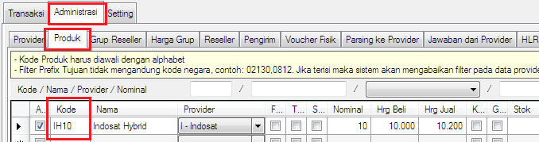
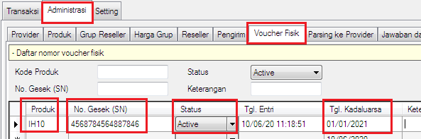
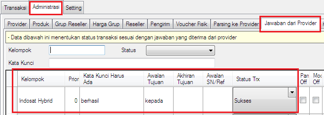
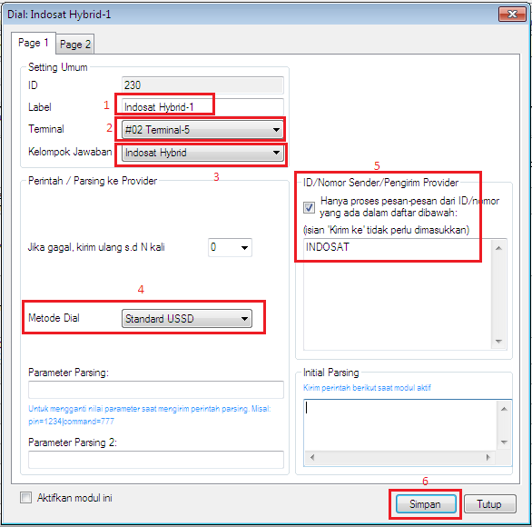
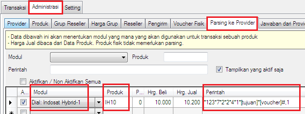

Voucher Hybrid
Voucher Hybrid merupakan fitur untuk mengotomatisasi sebuah layanan operator seluler, yaitu layanan yang memungkinkan pelanggan dapat mengisi ulang pulsa nomor pelanggan lain dengan voucher fisik tanpa pelanggan lain memasukkan kode voucher secara manual. Diantara operator yang menyediakan layanan tersebut adalah Indosat, sampai - sampai di kalangan pemain server pulsa sering disebut dengan nama Indosat Hybrid.
Harap dicatat fitur ini hanya tersedia di OtomaX Edisi Standard ke atas klik disini, maka jika OtomaX Anda Edisi Mini atau Lite lakukan upgrade OtomaX dahulu klik disini; dan jika ingin membayar iuran tahunan OtomaX klik disini; adapun untuk membeli OtomaX klik disini.
Pada kesempatan ini akan dibahas penggunaan fitur Voucher Hybrid dengan menggunakan layanan dari Indosat, sebagai berikut:
- Pastikan Anda sudah menyiapkan voucher fisik indosat, Anda bisa mendapatkannya di dealer indosat kota Anda atau yang bekerja sama.
- Pastikan Anda sudah menyiapkan nomor indosat dan dimasukkan ke modem yang terhubung dengan OtomaX di modul Terminal.
-
Masuk menu Administrasi -> Produk -> buat kode produk, misalnya IH10

-
Masuk menu Administrasi -> Voucher Fisik -> pada kolom Produk isi IH10; pada No.
Gesek (SN) isi kode voucher fisik indosat; pada Status pilih Active; pada Tgl.
Kadaluarsa pilih tanggal kadaluarsa voucher fisik sesuai tertera di kemasan; dan terakhir klik tombol
Simpan.

-
Masuk menu Administrasi -> Jawaban dari Provider -> buat penangkap jawaban agar transaksi dapat
sukses dan gagal secara otomatis, klik disini; pada
kolom Kelompok isi Indosat Hybrid misalnya.

-
Pilih modul Dial -> klik kanan -> klik Tambah Dial -> pada box Label isi Indosat
Hybrid-1 misalnya; pada Terminal arahkan ke Terminal lokasi nomor indosat; pada Kelompok
Jawaban arahkan ke kelompok jawaban Indosat Hybrid; di Metode Dial pilih Standard
USSD; di ID/Nomor Sender/Pengirim Provider isi INDOSAT (sesuaikan dengan pengirim balasan);
terakhir klik tombol Simpan.

-
Masuk menu Administrasi -> Parsing ke Provider -> pada kolom Modul pilih Indosat
Hybrid-1; pada Produk isi IH10; pada Perintah isi
*123*7*2*2*4*1*[tujuan]*[voucher]#,1 (sesuaikan dengan format layanan indosat, tanyakan ke dealer indosat
kota Anda); dan selanjutnya klik tombol Simpan.

- Selesai.
Sebagai tambahan informasi, setting diatas bekerja tidaknya sangat bergantung pada layanan indosat, artinya bilamana ada perubahan layanan bisa jadi tidak bekerja. Dan, fitur Voucher Hybrid dapat diterapkan di operator lain sepanjang memiliki layanan yang sama.